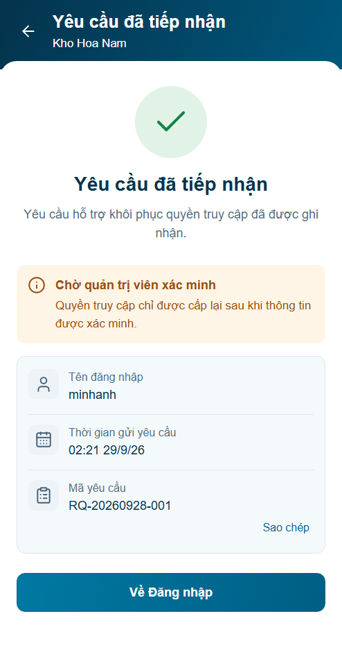
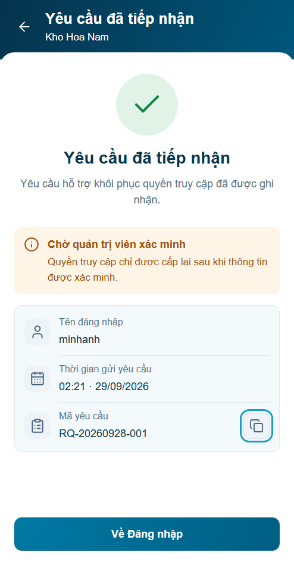

Trước · r01

Ba cột thông tin; copy44×44; giờ/ngày đầy đủ; Về Đăng nhập cố định56px. Visual chờ review; backend chưa tích hợp.
Báo cáo và kiểm chứng22 nhóm · Đủ bốn panel P14


Cùng494×950 CSS px/DPR1/Arial/fixture và thời gian cố định. Source B14 không sửa.